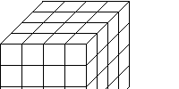
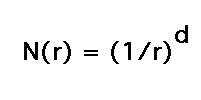
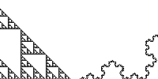
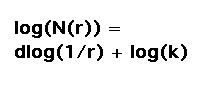
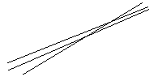

The dimension of an object has many interpretations besides the usual intuitive Euclidean representation. Here we will be looking at the dimension of objects which are subsets of the Euclidean plane.
The box-counting dimension formula will be motivated by considering the relationship between the scale at which a self-similar shape is viewed and the number of scaled copies of the shape contained within the shape. (This is the similarity dimension.)
Box-counting generalizes this relationship to shapes that are not exactly self-similar.
| We begin with dimensions of familiar Euclidean objects, viewed in a way different from the intuitive number of independent directions. |  |
| From this we deduce a scaling relationship that holds in circumstances more general than lines, squares, and cubes. |  |
| Now we apply the scaling relation to define the dimensions the Sierpinski gasket and of the Koch curve. |  |
| To define a dimension for natural fractals, we generalize this construction to the box-counting dimension. |  |
| Finally, we point out a problem associated with counting a small range of scales. |  |
Return to Dimension by Box-Counting.